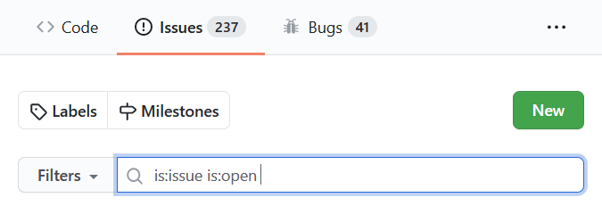

Welcome to Syncthing’s documentation!¶
As a new user, the getting started guide is a good place to start, then perhaps moving on to the FAQ. If you run into trouble getting devices to connect to each other, the page about firewall setup explains the networking necessary to get it to work.
As a developer looking to get started with a contribution, see how to build, how to debug and the contribution guidelines. This documentation site can be edited on GitHub.
Contact¶
If you’re looking for specific people to talk to, check out the Project Presentation.
To report bugs or request features, please use the issue tracker. Before you do so, make sure you are running the latest version, and please do a quick search to see if the issue has already been reported.
To report security issues, please follow the instructions on the Security page.
To get help and support, discuss scenarios, or just connect with other users and developers you can head over to the friendly forum.
For other concerns you may reach out to members of the maintainers, currently @calmh, @AudriusButkevicius and @imsodin.
- Introduction
- Usage
- Command Line Operation
- FAQ
- Versions & Releases
- Configuration
- Advanced Configuration
- Folder Types
- Introducer Configuration
- The GUI Listen Address
- LDAP Authentication
- Configuration Tuning
- Prometheus-Style Metrics
- Understanding Synchronization
- Untrusted (Encrypted) Devices
- Firewall Setup
- Relaying
- Using Proxies
- SSH Tunneling
- Ignoring Files
- File Versioning
- Syncthing Discovery Server
- Syncthing Relay Server
- Custom Upgrade Server
- Starting Syncthing Automatically
- Community Contributions
- Profiling
- Reverse Proxy Setup
- Security Principles
- Automatic Crash Reporting
- Development
- Specifications
Thanks¶
We thank all the documentation contributors for their hard work:
Jakob Borg (calmh), Audrius Butkevicius, Stefan Tatschner (rumpelsepp), André Colomb (acolomb), Adam Piggott (ProactiveServices), Simon Frei (imsodin), Tomasz Wilczyński, Syncthing Release Automation, Lode Hoste (Zillode), Nate Morrison (nrm21), Max, Lars K.W. Gohlke (lkwg82), JohnVeness, Jerry Jacobs (xor-gate), Ross Smith II, Scott Klupfel (kluppy), Antony Male (canton7), Marc Laporte, Cedric Staniewski (xduugu), Alexandre Viau (aviau), Stefan Kuntz (Stefan-Code), bt90, Martin Lazarov, Catfriend1, Stephen, Peter Kaminski, Peter Gervai, Pierre-Alain TORET, Peter Badida, Otto Jongerius, alex2108, Austin S. Hemmelgarn, novoid, Tom Hale, Alex Chan, Matt Sieren, Matt Burke (burkemw3), Matic Potočnik, Brian, raferobinson, bugith, C Bhushan, sa3dany, Martchus, camoz, Andrey D (scienmind), Scott Hansen, Emil Lundberg, Majed Abdulaziz (majedev), Louis Sautier, Unrud, Leo Arias (elopio), Laurent Etiemble (letiemble), Valerii Hiora, Ken Marsh, Wulf Weich (wweich), Daniel Clay Smith, jodusnodus, Jesse Lucas, 93-infinity, DavidFair, zertrin, Iliyan, hlovdal, Gal Szkolnik, Frank Sachsenheim, Evgeny Kuznetsov, Eric P, Kiryuu Sakuya, MikeLund, Edd Barrett, Duncan Smart, Dominik Schrempf, fejese, Felix Ableitner (Nutomic), fferrann, Filip Harald, Francois-Xavier Gsell (zukoo), Frank Harper, djtm, Function-10, dinosore, Gavrilov Aleksej, Girish Ramakrishnan, graboluk, Gusted, Göran Roseen, Heiko Zuerker (Smiley73), digital, Ian Sullivan, dertalai, iTob191, Ivan Vyshnevskyi, Dennis Gaida, Jakob Egger, James Hartshorn, Jason, Jason Lingohr, jbratu, Jean-Denis Vauguet, Jeroen Evens, David Rimmer (dinosore), Dave Holland, Jimmy Jones, Jip-Hop, Jo Wouters, Daniel O’Connor, John Buckley, Johnny Rock, dan2468, Jonathan Cross, Jonathan Vasquez, JsBergbau, jtagcat, ka7, Karol Pucyński, Kelong Cong (kc1212), Dakota, 2nv2u, Kramoule, krmathis, Kyle Manna, daftaupe, cron410, Cromefire_, Leo Famulari, Linger206, Liu Siyuan (liusy182), Cristian Mircea Messel, Cory Salveson, Luni, cmillsa2, Christian Kellermann, Marcin Orlowski, Marco Köpcke, marco-m, Mariano Rodríguez, Marius Volkhart, Cameron Steffen, Martin Freund, calvin ardi, Martin Michlmayr, Marwâne Chahed, Boris Rybalkin, bitinerant, Matt Kantor, bigscoop, Matthew Davis, Matthew Harris, Matthias Braun, bestlibre, Michael Vorburger ⛑️, Mike Nolta, eddsalkield, Mingwei Samuel, Morphy99, Moviuro, MrChenWithCapsule, mseravalli, Benjamin Schmid, NCDanielH, ngirard, NickPyz, Nico Stapelbroek, Nicolas Perraut, Benjamin Masters, Oliver Freyermuth, Ooker, Oskar Okuno, Arthur Lutz, Paweł Woźniak, arneko, Peter Butkovic, Peter Dave Hello, Antoni Sawicki, André-Patrick Bubel, Phil Davis, Andrew Colin Kissa, Pitxyoki, Quentin Hibon, Andrej Shadura, Rahmi Pruitt, Rajshekhar K, Reto Kaiser, RichardUUU, Rikiub%, rollbrettler, Romain Gay, Andreas Gohr, rrosini, Andreas Deininger, Salim B, Samuel Li, Samuel Smoker, Sanjeev Gupta, sapient_cogbag, schnappijedi, Anderson Mesquita (andersonvom), Anatoli Babenia, Sergio Livi, alexvoda, sliterok, Stefaan Ghysels, Alexandre Maurer, Alexander Graf (alex2108), StefanKopieczek, Stefano Probst, Alexander Baumann, Alex Scammon, Sébastien Wains, Tamás Sallai, terrycloth, terzinnorbert, theincogtion, Thomas Dalichow, Thovthe, Tim Boudreau, Tobbe, Tobi, Alex Gorichev, AJ ONeal, Tommy van der Vorst, tuathail, twomice, Tyler Kropp, uglygus, Adrian Rudnik, abdeoliveira, Vincent Ardern, Vincent Rischmann, Vium, Wieland Hoffmann, Willem Oosting, Abdelrahman Abdelhafez, Yakov Litvin, 4cdn, zocker-160